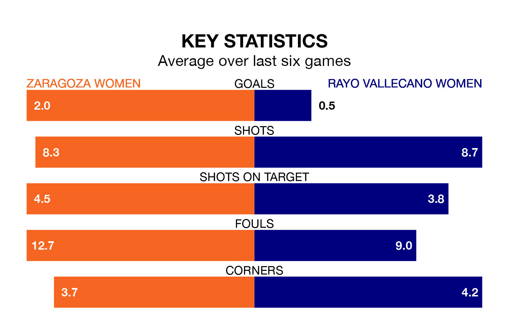

Rayo Vallecano Women come to play Zaragoza Women on early Sunday in terrible form, having collected just two points from their last six games.
The visitors have drawn two and lost four of their last six fixtures, while Zaragoza have four wins and two losses.
Rayo are zero in the table after 22 games, of which they have won six and drawn seven, earning 25 points.
Zaragoza are 11 places behind the visitors in 11th, with 10 wins and five draws putting them on 35 points.
With 20 goals in 22 games so far this season, Rayo are the league's-12th-lowest scorers with 0.9 goals per game. But they are conceding fewer than average too, letting in 27 goals at a rate of 1.2 per game.
The home side, meanwhile, are above average scorers, with 1.6 goals per game, compared to a league average of 1.3. They have conceded 1.1 goals per game.
In the last 10 years, Zaragoza and Rayo have played each other on nine occasions. Zaragoza won three of them, Rayo five, and they drew once.
On average, Zaragoza scored 1.2 goals and Rayo 1.7 in those matches.
Their last meeting was on October 29, when Zaragoza won 3-1 away.
Zaragoza's last match was on February 24, a 2-1 loss against Atlético Madrid III Women, with getting the goal for Zaragoza.
Rayo drew 1-1 with Espanyol II Women last time out, on February 25, with on the scoresheet.
Updated: 09:34 (UTC), 08/03/24